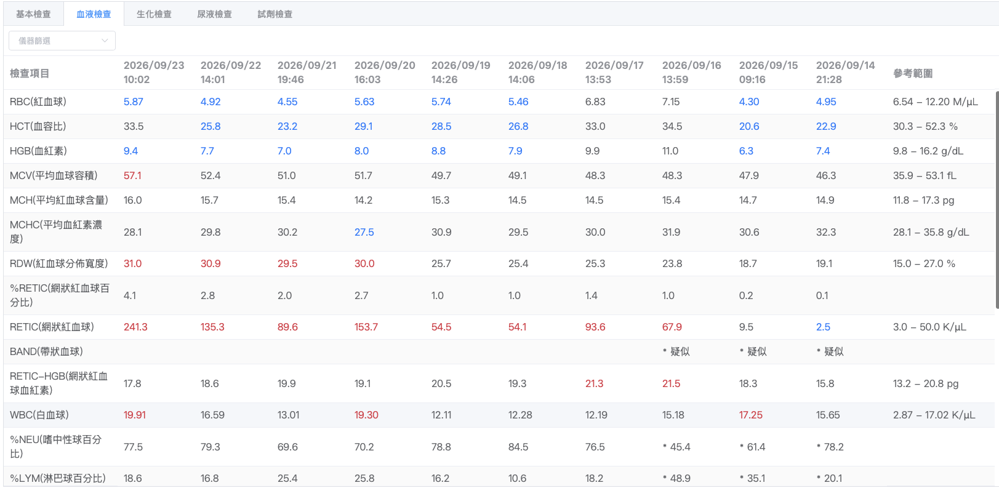

核心結論
9/21 看到的「PCV 一天掉 6 點」是抽血時間差造成的稀釋假象，不是真正的貧血惡化。Hana 的實際 PCV 約 30–33%，幾乎沒有貧血，DPO 的指徵不成立。回頭看，9/21 當下就不應該給 DPO——不只是事後諸葛：給藥前一天（9/20）的 RETIC 已經 153.7 K/µL，骨髓早就在積極造血，加上急性一天的變化本來就不是 DPO 這種慢性工具的作用範圍，這些訊號在給藥當下就存在，只是沒有先做鑑別診斷就直接治療了。9/23 的高 RETIC（241.3 K/µL）幾乎確定是 9/16 就開始的內源性再生反應的延續，時間尺度對不上 DPO 藥效——不建議繼續給藥；鐵劑則因造血加速、10天連續抽血消耗，可以獨立於 DPO 決策繼續給予。
PCV／HCT 是濃度不是總量——分子（紅血球）沒變，分母（血漿）被輸液撐大，數字就會跳動到看似貧血惡化。急性數字變化要先問「這個數字是真的嗎」（抽血時間、輸液速率、TP/Alb），再問「要給什麼藥」；處置的時間尺度必須跟問題的時間尺度對齊——急性稀釋不需要慢性藥物介入。
基礎知識：EPO、DPO 與鐵劑分別在做什麼
後面幾節會反覆用到這三個名詞，先把它們的角色分清楚：EPO 是身體自己發的訊號，DPO 是人工補這個訊號，鐵劑是造血用的原料——三者處理的是完全不同層級的問題，缺一個都做不出紅血球，但補錯一個也解決不了另一個的問題。
EPO（Erythropoietin，紅血球生成素）——身體自己的訊號
- 產生位置：主要是腎臟（腎皮質與外髓質的間質纖維母細胞），少量由肝臟製造
- 觸發機轉：組織缺氧 → HIF（hypoxia-inducible factor）路徑活化 → 分泌 EPO 進入血液循環
- 作用位置：結合骨髓紅血球前驅細胞（CFU-E、BFU-E）上的 EPO 受體，促進其存活、增殖、分化為成熟紅血球
慢性腎病時，受損的腎臟間質細胞無法正常分泌足夠的 EPO，骨髓收不到「多做紅血球」的訊號，造成腎性貧血（renal anemia）——特徵是非再生性（骨髓沒反應，RETIC 不會升高）。這是 DPO 這類藥物設計要解決的問題。
DPO（Darbepoetin alfa）——人工合成的長效 EPO 替身
本質是重組合成的 EPO 類似物，結構上比天然 EPO 多了醣化位點，因此半衰期更長、注射頻率可以降低（這也是名字裡 Darbe- 的由來）。它的適應症很明確：補足因為腎臟訊號不足而缺的 EPO，不是廣效的「補血劑」。
如果骨髓已經有能力造血、只是缺少 EPO 訊號（如 CKD），DPO 補上訊號才有意義；如果骨髓根本沒有收訊號的問題（例如訊號已經足夠、甚至骨髓已經在自主積極造血），額外補 DPO 不會加速造血，只會疊加過度刺激的風險（紅血球增多症、高血壓、PRCA）。這正是 Hana 這個病例的核心矛盾——她的骨髓從沒缺過訊號。
鐵劑——造血的原料，不是訊號
血紅素（Hemoglobin）的核心結構 Heme 需要 Fe²⁺；就算 EPO 訊號充足、骨髓也想造血，沒有足夠的鐵，前驅細胞也無法順利做出「有血紅素、能帶氧」的成熟紅血球——這時候骨髓是「有訊號、沒原料」，等於空轉。
體內鐵儲存總量真的不夠（如長期失血、營養不良）。
鐵儲存量可能足夠，但因發炎（hepcidin 把鐵鎖在巨噬細胞內）或造血速度太快、超過鐵釋放供應的速度，導致短期內鐵「供不應求」——Hana 屬於這一種。
監測工具：CHr（RETIC-HGB，網狀紅血球血紅素含量）——比血清鐵更即時，反映的是「新做出來的紅血球有沒有拿到足夠的鐵」，而不是體內鐵儲存的總量。
三者合作的臨床邏輯
| 骨髓的狀態 | 該補什麼 |
|---|---|
| 訊號足夠，但缺鐵（原料不夠） | 只需要補鐵，不需要 DPO |
| 訊號不足（如 CKD），骨髓怠工 | 需要 DPO 補訊號，且必須同時確保鐵足夠——否則訊號有了、原料不夠，骨髓仍做不出東西 |
| 訊號本來就足夠，骨髓已自主積極造血（如 Hana） | 不需要 DPO（甚至有害）；但造血加速仍會消耗鐵，可能需要補鐵 |
※ Hana 屬於第三種情況：骨髓從未缺過訊號，DPO 的指徵從一開始就不成立；鐵劑則因應加速造血的消耗，是合理的獨立決策。詳細數據見下方各節。
事件回顧
Hana，3 歲 6 個月米克斯母貓，3.2 kg，因輸尿管結石阻塞由外院轉入，裝置 SUB（Subcutaneous Ureteral Bypass，皮下輸尿管繞道）。Crea 由 14 降至 4.1，再降至 0.8。住院期間輸液設定：白天 8 mL/hr，夜間包手不打點滴。
表面上看起來處置有效——但時間軸對不上，需要重新檢視。

關鍵發現：抽血時間決定了數字
9/20 抽血於 16:03，9/21 抽血於 19:46——多泡了將近 4 小時的點滴。
血容積計算
以 3.2 kg 貓估算：血容積 ≈ 3.2 × 55 mL/kg ≈ 176 mL；HCT 29% 時，血漿容積 ≈ 125 mL；8 mL/hr × 多 3.7 hr ≈ 30 mL，血漿被撐大約 20–25%。
預期 HCT = 29.1 ÷ 1.22 ≈ 23.9%，實測 23.2%——幾乎完全吻合。
三項同步下降 = 稀釋的指紋重要
| 項目 | 9/20 16:03 | 9/21 19:46 | 變化 |
|---|---|---|---|
| RBC (M/µL) | 5.63 | 4.55 | −19% |
| HCT (%) | 29.1 | 23.2 | −20% |
| RETIC (K/µL) | 153.7 | 89.6 | −42% |
RBC 與 HCT 等比例下降，出血或溶血不會產生這麼乾淨的比例。更關鍵的是 RETIC 也跟著掉——真的急性失血，骨髓會更興奮，RETIC 不可能反而減少。所有細胞成分一起被水稀釋，才會呈現這種型態。
整條曲線其實是「抽血時鐘」
| 日期 | 抽血時間 | HCT (%) | 點滴累積時數 |
|---|---|---|---|
| 9/23 | 10:02 | 33.5 | 整夜未打，最濃縮 |
| 9/22 | 14:01 | 25.8 | ~6 hr |
| 9/21 | 19:46 | 23.2 | ~12 hr，最稀釋 |
| 9/20 | 16:03 | 29.1 | ~8 hr |
| 9/19 | 14:26 | 28.5 | ~6 hr |
早上抽最高、晚上抽最低。9/22 到 9/23「兩天跳 10 點」的謎團，答案同樣是時間——從下午 14:01 換成早上 10:02。9/23 的 HCT 漲幅略大於 RBC，是因為 MCV 由 52.4 升至 57.1 fL，網狀紅血球把細胞撐大了。數據內部完全自洽。
Hana 真實的 PCV 約 30–33%（早上未輸液狀態），參考範圍 30.3–52.3%。她幾乎沒有貧血。9/21 看到的 23.2 是「泡了 12 小時點滴的貓」的數字，不是她的紅血球量。
再生性貧血怎麼判斷
只看 RETIC 絕對值（K/µL），不要看 %RETIC。%RETIC 的分母是 RBC，貧血時 RBC 下降，同樣的網狀紅血球數量會讓百分比被灌水。Hana 9/21 的 %RETIC 只有 2.0 看似平平，但 4.55 M/µL × 2.0% = 89.6 K/µL，已是明確再生性。
貓的 Aggregate Reticulocyte 分級重要
| RETIC 絕對值 (K/µL) | 判讀 |
|---|---|
| < 50 | 非再生性 |
| 50–100 | 輕度再生 |
| 100–200 | 中度再生 |
| > 200 | 強烈再生 |
三個佐證指標
46.3→48.3→49.7→51.0→52.4→57.1 fL。網狀紅血球比成熟紅血球大，MCV 被拉高代表骨髓在放新細胞出來。
19.1→25.7→29.5→31.0%。RDW 是紅血球大小的離散度，新舊兩群細胞混雜（anisocytosis）就會升高。
RETIC-HGB維持18–21 pg，代表新造出的紅血球「有料」，鐵供應充足——比血清鐵更即時的功能性鐵指標。
MCV 高＋RDW 高＋RETIC 高＝典型再生性型態。若為缺鐵，會反向走 MCV 低、CHr 低。
Hana 的 RETIC 走勢：教科書等級的自然再生曲線
| 日期 | 9/14 | 9/15 | 9/16 | 9/17 | 9/18 | 9/19 | 9/20 | 9/21 | 9/22 | 9/23 |
|---|---|---|---|---|---|---|---|---|---|---|
| RETIC (K/µL) | 2.5 | 9.5 | 67.9 | 93.6 | 54.1 | 54.5 | 153.7 | 89.6 | 135.3 | 241.3 |
入院時 2.5 K/µL（完全非再生性），9/16 之後一路上爬。急性損傷後 3–5 天骨髓啟動，接著逐步加速——這條線在 DPO 給藥前就已經確立了方向。
DPO：適應症與時間尺度
處置的時間尺度必須和問題的時間尺度對齊。擔心的是「一天」，DPO 解決的是「一個月」——工具本身沒錯，錯在對不上。
| 事件 | 時間尺度 |
|---|---|
| 一天內 PCV 掉 6 點 | 小時級事件——出血、溶血、或稀釋 |
| 骨髓造血反應 | 3–5 天才看到 RETIC 動 |
| DPO 讓 RETIC 上升 | 給藥後 3–7 天 |
| DPO 讓 PCV 有感上升 | 2–4 週 |
9/21 給藥、9/23 測到 241.3，只隔 2 天。這個數字幾乎確定是 9/16 就開始的內源性再生反應的延續，不是 DPO 造成的。判斷療效永遠要先問「這個藥什麼時候會開始作用」，再看時間軸對不對得上。
這隻貓有 EPO 缺乏嗎？
DPO 的適應症是腎性貧血——慢性腎病導致腎臟間質細胞分泌 EPO 不足。EPO 缺乏需要時間累積，兩週的 AKI 不太可能造成有意義的缺乏。Hana 是 3 歲半的年輕貓、急性輸尿管阻塞造成的 AKI、Crea 已回到 0.8，一項都不符合。
她的貧血（若真的存在）更可能來自：
- Anemia of inflammation：IL-6 → hepcidin ↑ → 鐵被鎖在巨噬細胞內。這種 DPO 效果差。
- 醫源性失血：3.2 kg 貓總血量約 176 mL，連抽 10 天 CBC 加上手術失血。
- 稀釋性：如前節所述，這是主因。
DPO 的風險重要
- 高血壓：最需要在意的一項。EPO 類藥物會升壓，剛做完 SUB 的腎貓本身就是高血壓高風險族群，可能導致視網膜剝離、高血壓腦病。
- Pure red cell aplasia（PRCA，純紅血球再生不良）：產生抗 EPO 抗體，反而完全不造血。DPO 發生率低於 rHuEPO 但仍存在。
- 癲癇、鐵耗竭。
鐵劑：合理，但時機不同
CHr 走勢 19.9（9/21）→ 18.6（9/22）→ 17.8（9/23），9/21 當下 CHr 正常、不缺鐵；真正開始掉是 9/22 之後，因為 RETIC 衝到 241.3，造血加速把鐵消耗掉，出現 functional iron deficiency。
鐵劑的最佳時機是現在，不是 9/21。不過提早給不算錯——鐵劑相對安全，且連續住院 10 天每日抽血，鐵儲備本來就在消耗。若決定使用 DPO，鐵劑幾乎是必配：沒有鐵，骨髓只是空轉。但鐵劑本身的必要性不需要綁在 DPO 決策上——即使停用 DPO，鐵劑仍可因應加速中的內源性造血需求繼續給予。
急性 PCV 下降的鑑別流程
先問「為什麼掉」，再問「要給什麼」。一天內 PCV 明顯下降只有三個可能。關鍵鑑別是 TP/Albumin，不是 CBC。CBC 三個數字都會同步下降，分不出來，這是為什麼急性 PCV 下降一定要同時看 TP。
| 機轉 | RBC | HCT | HGB | TP/Alb | 怎麼確認 |
|---|---|---|---|---|---|
| 稀釋（輸液） | ↓ | ↓ | ↓ | ↓ | 輸液速率、抽血時間、體重、TP |
| 出血 | ↓ | ↓ | ↓ | ↓ | 找出血點、腹超、手術部位、採血量 |
| 溶血 | ↓ | ↓ | ↓ | 不變 | 血漿顏色、TBIL、抹片球形紅血球 |
決策順序
貓的輸血觸發點
PCV < 15–18%，或出現臨床症狀：頻脈、呼吸快、虛弱、黏膜蒼白、lactate 升高。Hana PCV 23% 且無症狀，尚未到輸血門檻，單純觀察加隔天回測是合理的。
急性問題要配急性工具：急性失血 → 輸血；急性稀釋 → 調輸液。DPO 是慢性工具，對小時級的變化幫不上忙。
回顧：9/21 的決策哪裡可以做得更好
前面幾節拆解的是「數字本身有沒有問題」——結論是稀釋假象。這節要問的是另一件事：就算不看事後的 9/23 數據，9/21 當下的決策流程本身站不站得住腳？答案是不站得住腳，而且不需要事後諸葛，用 9/21 當天已經存在的資訊就能看出來。
- 9/20 的 RETIC 已經是 153.7 K/µL——這是給藥「之前」就抽到的數字，已落在中度到強烈再生範圍。若給藥前有拉出 RETIC 趨勢看一眼，會發現骨髓根本沒有偷懶，這時候補 EPO 類藥物的邏輯基礎就已經薄弱。
- 急性一天的變化，本來就不是 DPO 的作用範圍——這點不需要任何檢驗數據，純粹是藥理學：DPO 起效要 3–7 天、PCV 有感上升要 2–4 週，用它去處理「一天內掉 6 點」，時間尺度從一開始就對不上，跟後來證實是稀釋無關。
- EPO 缺乏的病理機轉在 9/21 當下就不成立——Hana 是年輕貓、急性阻塞性 AKI 正在改善中（Crea 持續下降），不是慢性腎病的族群，這個判斷不需要等兩天後的 RETIC 曲線才能下。
- 給藥前沒有先排除稀釋／出血／溶血——TP/Alb 若當時有配合 CBC 一起看，稀釋這個最溫和的解釋本來就該先被排除或確認，而不是看到 HCT 掉就直接治療。
9/21 的決策問題不是「DPO 這個工具選錯」，而是在做鑑別診斷之前就先給了藥——跳過了「為什麼掉」直接跳到「要給什麼」。對照第 7 節的鑑別流程：PCV 急性下降應該先看 TP/Alb、抽血時間、輸液速率，再決定是稀釋、出血還是溶血；DPO 從頭到尾都不在這張鑑別流程圖的任何一個分支終點上，因為它處理的不是「急性下降的原因」，而是「慢性造血不足」——兩者是不同層級的問題。
這個複盤跟下一節「9/23 決策」的差別：這節是往回看「當初的判斷流程」，下一節是往前看「現在該怎麼做」——兩者結論一致（DPO 不該繼續／不該給），但論證的材料不同，值得分開記錄。
9/23 決策：DPO 停、鐵劑繼續
整合以上分析，對「今天（9/23）該不該再打一劑 DPO＋鐵」的實際決策。
- 今天早上未輸液的乾淨數據：HCT 33.5%，已在參考範圍內，幾乎不貧血
- RETIC 241.3 的上升曲線從 9/16 就開始，比給藥早 5 天，時間尺度對不上 DPO 藥效
- 原始適應症本就站不住腳：急性阻塞性 AKI 已解除，非腎性貧血族群
- 風險已經反過來：PCV 正自行達標並持續上升，疊加 DPO 恐衝過頭（紅血球增多症、血液黏稠度上升），剛做 SUB 的腎貓是高血壓高風險族群
- CHr 19.9→18.6→17.8 pg，雖仍在範圍內但方向向下
- RETIC 持續加速，造血消耗鐵的速度只會更快
- 連續 10 天每日抽血，鐵儲備消耗是真實存在的
- 鐵劑風險低，此決定不需要跟著 DPO 一起停
今天這劑 DPO 先保留；鐵劑照給。把「PCV 已回升至 33%、繼續給藥有過度上升風險」明確帶去跟主治確認——這本來就在待確認清單裡，現在有今天的數據可以收斂成具體建議，而不是開放式問題。
學習重點
後續監測與待確認事項
後續監測
| 項目 | 頻率 | 理由 |
|---|---|---|
| 血壓 | DPO 後每週 | EPO 類藥物最需防的併發症，尤其腎貓 |
| PCV + RETIC | 每週 | 目標 PCV 緩升至 25–30%；上升過快需減量 |
| CHr (RETIC-HGB) | 每 1–2 週 | < 13 pg 代表功能性缺鐵 |
| RETIC 驟降 | 隨時警覺 | < 10 K/µL 併 PCV 下滑 → 懷疑 PRCA |
| 尿檢＋尿培養 | 依 WBC 趨勢 | SUB 裝置相關感染、pyelonephritis |
| Crea + K⁺ | 持續 | Post-obstructive diuresis 後低血鉀 |
另注意 WBC 趨勢：9/19 12.11 → 9/20 19.30 → 9/22 16.59 → 9/23 19.91 K/µL（上限 17.02），%NEU 77.5。SUB 最常見的長期併發症即裝置相關感染，值得追蹤。但住院壓力、類固醇、術後發炎反應也會造成，需搭配體溫與尿檢判讀。
待向主治確認
- 9/15 → 9/16 HCT 由 20.6 跳至 34.5，一天漲 14 點。抽血時間是 09:16 → 13:59，時間效應為反向卻仍上漲——這組數據只剩輸血能解釋。請確認 9/15–9/16 有無給 pRBC。若有，早期是真的有貧血（早上抽只有 20.6），後續恢復有一部分來自輸血而非骨髓。
- 9/20、9/21 的 TP/Alb 數值，用以確認稀釋判讀。
- 下一劑 DPO 還打嗎？PCV 已回升至 33%，繼續給藥有 PCV 過度上升、血液黏稠度增加的風險。目標是 25–30%，不是越高越好。
- 選 DPO 的考量是「RETIC 反應不足」，還是預期 AKI 會留下 CKD 而預防性給？後者是另一套邏輯，值得釐清。
- 住院貓的 CBC 抽血時間有無統一規定？這可能是科室流程可以改善的點。